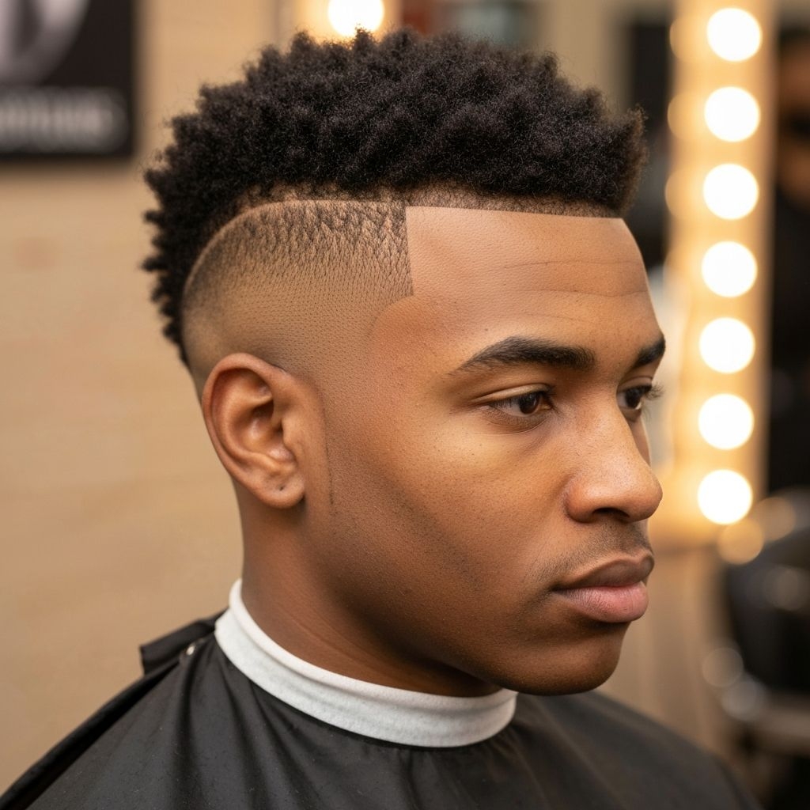

If you're searching for "low taper fade near me" or "skin fade barber in Rocky Mount," you're not alone. These two fade styles are among the most requested men's haircuts in 2026, and understanding the difference can help you get exactly the look you want at your next appointment.
As a mobile barber serving Rocky Mount, Greenville, Wilson, and Tarboro NC, I cut dozens of fades every week. In this guide, I'll break down the key differences between low taper fades and skin fades, help you decide which one suits your face shape and lifestyle, and share expert tips for maintaining your fade between haircuts.
What is a Low Taper Fade?
A low taper fade is a gradual transition from longer hair on top to shorter hair on the sides, with the fade starting just above the ear. Unlike more aggressive fades, the low taper maintains some length throughout, creating a subtle, professional look that works in any setting.
Key characteristics of a low taper fade:
- Gradual blending - Hair transitions smoothly without harsh lines
- Conservative start point - Fade begins low, around 1 inch above the ear
- Versatile styling - Works with textured tops, pompadours, or slicked-back styles
- Professional appearance - Appropriate for corporate environments
- Lower maintenance - Grows out more gracefully than skin fades
What is a Skin Fade (Bald Fade)?

A skin fade, also called a bald fade or zero fade, takes the hair down to the skin at the lowest point. This creates a dramatic contrast between the shaved areas and the hair on top, delivering a sharp, modern look that's incredibly popular with younger clients.
Key characteristics of a skin fade:
- Dramatic contrast - Clear transition from skin to hair
- Clean, sharp lines - Defined edges around the hairline
- Multiple variations - Low, mid, or high skin fades available
- Bold statement - Perfect for those who want to stand out
- Higher maintenance - Requires touch-ups every 1-2 weeks
Low Taper Fade vs Skin Fade: Quick Comparison
| Feature | Low Taper Fade | Skin Fade |
|---|---|---|
| Starting Point | Hair at the lowest point | Skin (no guard) |
| Maintenance | Every 2-3 weeks | Every 1-2 weeks |
| Best For | Professional settings, conservative looks | Modern, bold styles |
| Grow-out | Graceful, stays neat longer | Visible regrowth quickly |
| Face Shapes | All face shapes | Oval, square, diamond |
Which Fade is Best for Your Face Shape?
Round Face
If you have a round face, a low taper fade with added height on top helps elongate your face. Avoid high skin fades that can make your face appear wider.
Oval Face
Lucky you! Oval faces work with almost any fade style. Both low taper fades and skin fades look great, so choose based on your lifestyle and maintenance preferences.
Square Face
A mid or high skin fade complements strong jawlines by keeping the sides tight while maintaining volume on top. This balances your angular features.
Long Face
A low taper fade with fullness on the sides helps add width to long, narrow faces. Avoid high fades that can make your face appear even longer.
How to Maintain Your Fade Between Haircuts
Whether you choose a low taper fade or skin fade, proper maintenance keeps you looking sharp:
- Book regular appointments - Low taper fades every 2-3 weeks, skin fades every 1-2 weeks
- Use quality hair products - A good pomade or styling cream maintains your style between cuts
- Keep your neckline clean - Use a trimmer to tidy up between visits (or book a quick touch-up)
- Protect from sun damage - Skin fades expose more scalp, so use sunscreen on sunny days
- Wash properly - Don't over-wash; 2-3 times per week with quality shampoo is ideal
Popular Fade Variations I Offer
As your mobile barber, I specialize in all types of fades:
- Low taper fade - Classic, professional, versatile
- Mid taper fade - Balanced between subtle and bold
- High taper fade - More dramatic, modern look
- Low skin fade (bald fade) - Clean, contemporary style
- Mid skin fade - Popular with younger clients
- High skin fade - Maximum contrast, bold statement
- Burst fade - Curves around the ear for unique style
- Drop fade - Drops behind the ear for added dimension
Why Choose a Mobile Barber for Your Fade?
Getting a quality fade requires skill, proper lighting, and attention to detail. When I come to your home or office in Rocky Mount, Greenville, Wilson, or Tarboro, you get:
- One-on-one attention - No distractions, just focused craftsmanship
- Convenience - No travel time, no waiting in line
- Professional equipment - I bring everything needed for a barbershop-quality cut
- Flexible scheduling - Appointments that fit your busy life
- Personalized consultation - We discuss your goals before every cut
Ready to Get Your Perfect Fade?
Book your mobile barber appointment today. I'll come to you in Rocky Mount, Greenville, Wilson, or Tarboro NC with all the tools needed for a sharp, professional fade.
Book Your Fade HaircutFrequently Asked Questions About Fades
How long does a fade haircut take?
A quality fade typically takes 30-40 minutes. I take my time to ensure perfect blending and clean lines, which is one of the advantages of using a mobile barber - no rushing to get to the next client.
How often should I get my fade touched up?
Skin fades need touch-ups every 1-2 weeks to maintain that fresh look. Low taper fades can go 2-3 weeks between cuts. I offer maintenance appointments specifically for keeping your fade sharp.
Can you do a fade on curly hair?
Absolutely! Curly hair fades beautifully. The key is working with your natural texture. I have extensive experience with all hair types and can create a fade that complements your curls.
Is a skin fade appropriate for work?
Most workplaces today are fine with well-groomed skin fades. However, if you're in a very conservative environment, a low taper fade might be a safer choice. We can discuss this during your consultation.
Book Your Mobile Barber Appointment Today
Whether you want a subtle low taper fade for the office or a bold skin fade for the weekend, I deliver expert fade haircuts right to your door in Rocky Mount, Greenville, Wilson, and Tarboro NC.
Stop searching for "fade haircut near me" and book with a mobile barber who comes to you. Contact me today to schedule your appointment!
Call or text: (919) 809-0529
Service areas: Rocky Mount NC, Greenville NC, Wilson NC, Tarboro NC